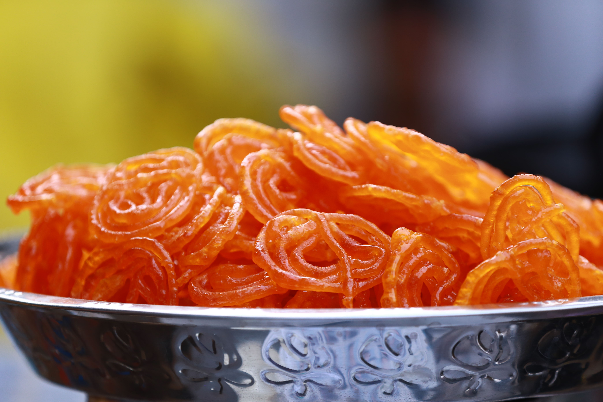
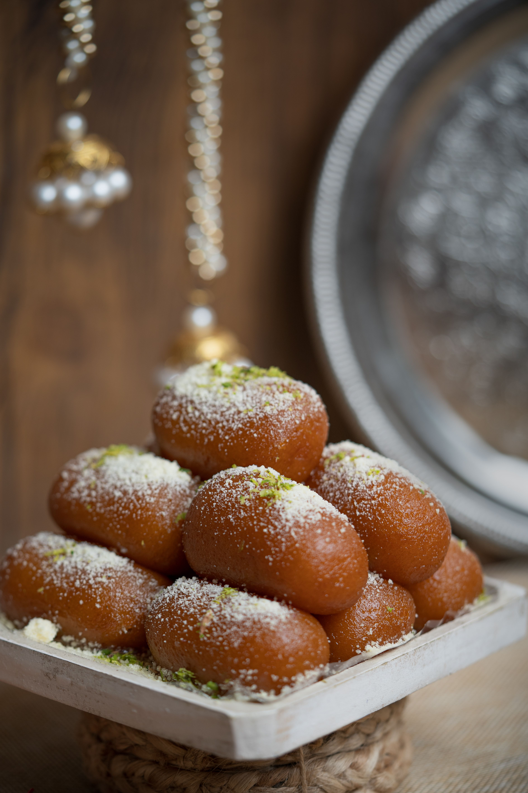
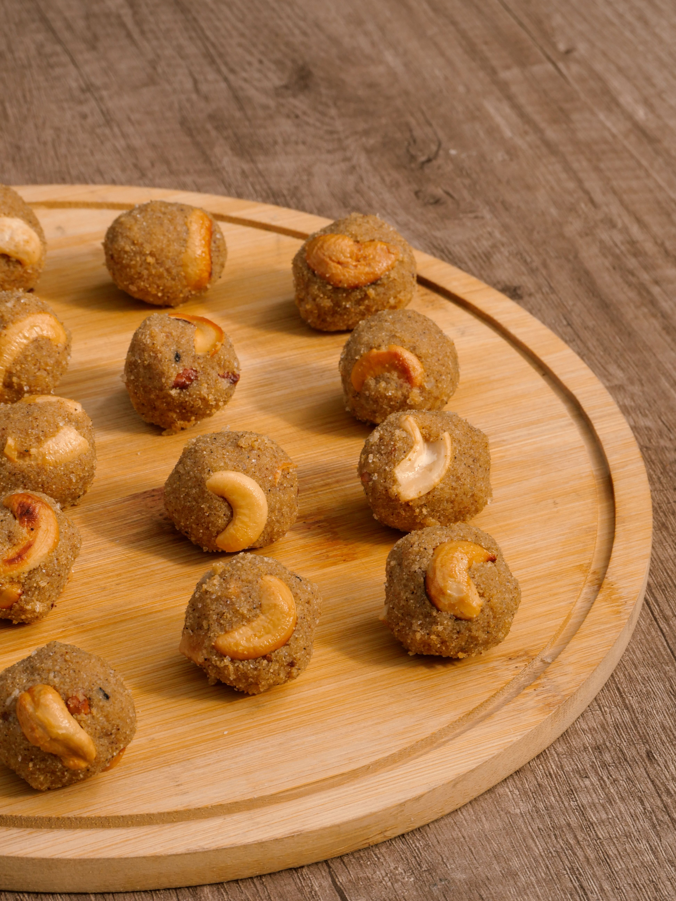

Jalebi
Ingredients
- Milk powder, Maida, Ghee, Milk
- Sugar syrup, Cardamom
Recipe
- Knead milk powder, maida, and ghee into a soft dough.
- Shape into small balls without cracks and fry on low heat.
- Soak fried balls in warm sugar syrup for 2 hours.

Lalmohan
Ingredients
- Mawa (Khoya), Powdered sugar
- Cardamom powder, Chopped nuts
Recipe
- Roast crumbled mawa on low heat for 5 minutes.
- Mix sugar, stir until the mixture thickens and leaves pan sides.
- Set in a greased tray, top with nuts, and cut into squares.

Rasgulla
Ingredients
- Fresh Chenna (Paneer), Sugar, Water
Recipe
- Knead the fresh chenna thoroughly until completely smooth.
- Roll into small balls and boil them in thin sugar syrup.
- Cook covered for 15 minutes until they double in size.

Ladoo
Ingredients
- Full cream milk, Basmati rice, Sugar
- Saffron, Chopped almonds
Recipe
- Boil milk in a deep pan and add washed rice.
- Simmer on low heat, stirring occasionally until rice gets mushy.
- Add sugar, saffron, and nuts, then cook for 5 more minutes.
